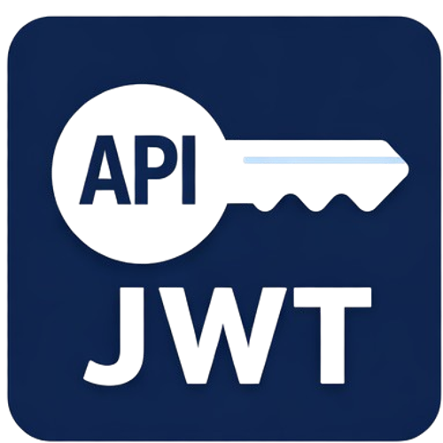
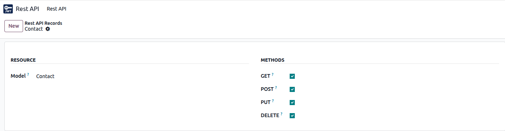

This module provides a complete JWT (JSON Web Token) authentication
solution for Odoo REST APIs.
It supports secure login, access token refresh, refresh token rotation,
logout (token revoke), and a powerful generic CRUD API protected by JWT.

All protected endpoints require the access token in the Authorization header.
Headers:
{
"Content-Type": "application/json",
"Authorization": "Bearer <ACCESS_TOKEN>"
}
POST /api/login (auth: none)
Request:
{
"login": "admin",
"password": "admin"
}
Response (Browser):
{
"token": "ACCESS_TOKEN",
"user_id": 2,
"refreshToken": "REFRESH_TOKEN",
}
Response (Mobile/App):
{
"token": "ACCESS_TOKEN",
"refreshToken": "REFRESH_TOKEN",
"user_id": 2
}
POST /api/update/access-token
Request:
{
"user_id": 2
}
Response:
{
"access_token": "NEW_ACCESS_TOKEN"
}
POST /api/update/refresh-token (auth: jwt)
Response (Browser):
{
"status": "done",
"refreshToken": 1
}
Response (Mobile/App):
{
"status": "done",
"refreshToken": "NEW_REFRESH_TOKEN"
}
POST /api/revoke/token (auth: jwt)
Response:
{
"status": "success",
"logged_out": 1
}
This module includes a generic API endpoint that can read, create, update, and delete records
from any Odoo model, based on configuration rules (connection.api).
Access to this endpoint is protected by JWT authentication.

/api/send_request (auth: jwt) — supports GET, POST, PUT, DELETE
?model= and verifies the model exists in ir.model.connection.api settings for the model
(allowed methods: GET/POST/PUT/DELETE).sudo().model (required): Odoo model technical name (example: res.partner)id (optional): record ID to fetch a single resourcefields (required): JSON list of fields to return (example: ["name","email"])domain (optional): Odoo domain in string format (example: [["is_company","=",true]])expand (optional): relation expansion map (example: {"child_ids":["name"]})offset (optional): page number (default: 1)limit (optional): page size (default: 20)
Example (GET list):
/api/send_request?model=res.partner&fields=["name","email"]&domain=[["is_company","=",true]]&offset=1&limit=20
Example (GET by id):
/api/send_request?model=res.partner&id=10&fields=["name","email"]
Example (GET with expand):
/api/send_request?model=res.partner&fields=["name"]&expand={"child_ids":["name","email"]}
For create/update, send JSON body with:
values (data to write),
optional fields (fields to return),
optional expand (relations to expand).
Example (POST create):
POST /api/send_request?model=res.partner
{
"values": {
"name": "Test Partner",
"email": "test@example.com"
},
}
Example (PUT update):
PUT /api/send_request?model=res.partner&id=10
{
"values": {
"email": "new@example.com"
},
}
DELETE /api/send_request?model=res.partner&id=10
Response:
{
"deleted_id": 10
}
/api/send_request require a valid access token.connection.api settings.offset (page) and limit (page size).sudo(). It is recommended to strictly control
which models and methods are enabled through configuration and access rules.